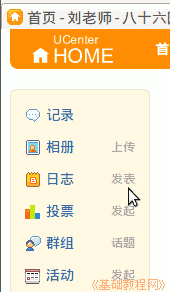
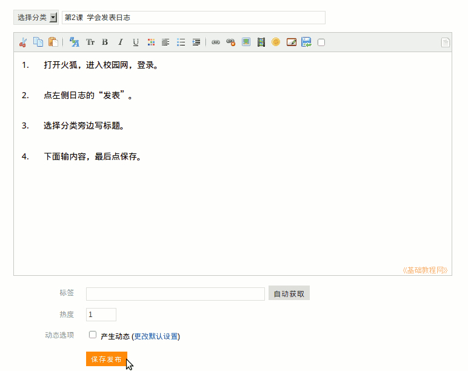

2011-2012 第一学期七年级电脑操作基础教学课程设计
作者：TeliuTe 来源：基础教程网
二、学会发表日志 返回目录 下一课学习目标：学会在校园网里发表日志；
注意事项：写完一定要保存发布；
1、发表日志
1）打开火狐，用自己的账号登录，如果不是就点右上角“退出”；
2）登录成功以后，在左边找到日志，点旁边的“发表”按钮；

3）输入标题、内容，检查错别字，然后点下边黄色的“保存发布”；

4）提示成功后，打一篇指法 E01；
课后记：
下午七年级的课，学一下发表日志本节学习了发表日志的基础知识，如果你成功地完成了练习，请继续学习下一课内容；
本教程由86团学校TeliuTe制作|著作权所有
基础教程网：http://teliute.org/
美丽的校园……
转载和引用本站内容，请保留版权信息和本站链接。